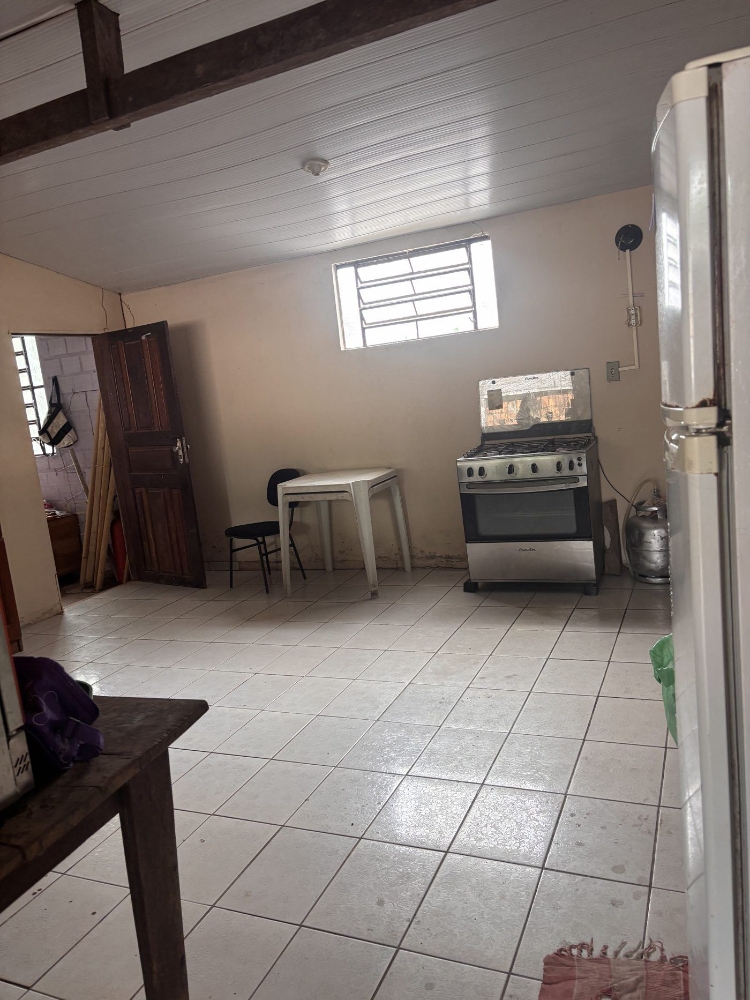

Boá na Ilha

O restaurante Boá na Ilha começou com o pai e a mãe do atual proprietário, que faziam a manutenção do açaizal e processavam o próprio açaí para vender em litro. Da produção, veio uma mercearia; da mercearia, a cozinha; da cozinha, o bar do Boá, que promovia festas e eventos para a própria comunidade das ilhas. Em 2017, esse caminho se transformou no que é hoje: uma casa de experiências que serve alimentação, promove passeios, feiras e encontros. A base da alimentação do Combu é o açaí, "o nosso feijão", como define Boá, acompanhado de peixe, charque e enlatados. Hoje, tudo o que se vende no restaurante é produzido por pessoas da própria comunidade — um ciclo econômico local que a cozinha-escola e o quintal produtivo vêm fortalecer.
O momento mais difícil talvez tenha sido o início, pois não se tinha estrutura, como energia elétrica, internet e transporte para levar o lixo. E o mais gratificante é ver que a gente chegou até aqui, conseguiu passar por todas essas barreiras e estamos aqui hoje.
— Boá, proprietário do restaurante Boá na Ilha
Quando a gente fizer produção aqui, a gente vai conseguir ter essa autonomia de produzir folhagens e alguns outros legumes todos aqui. E, a partir do momento que a gente consegue escalar com isso, a gente consegue também distribuir para as cooperativas que estão aqui próximo.
— Boá, sobre o que a cozinha-escola vai resolver
Se eu pudesse imaginar a Cozinha Escola daqui a um ano, para te falar a verdade, eu já imaginaria duas cozinhas e muito mais cursos, mais capacitação e mais pessoas envolvidas.
— Boá